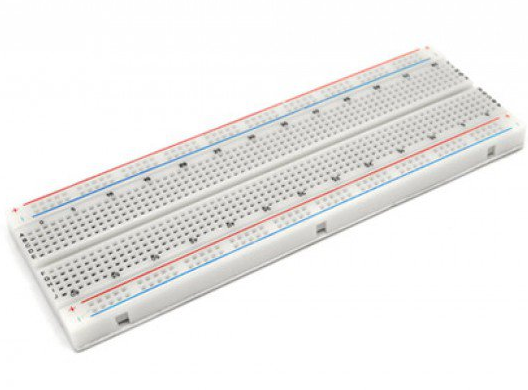
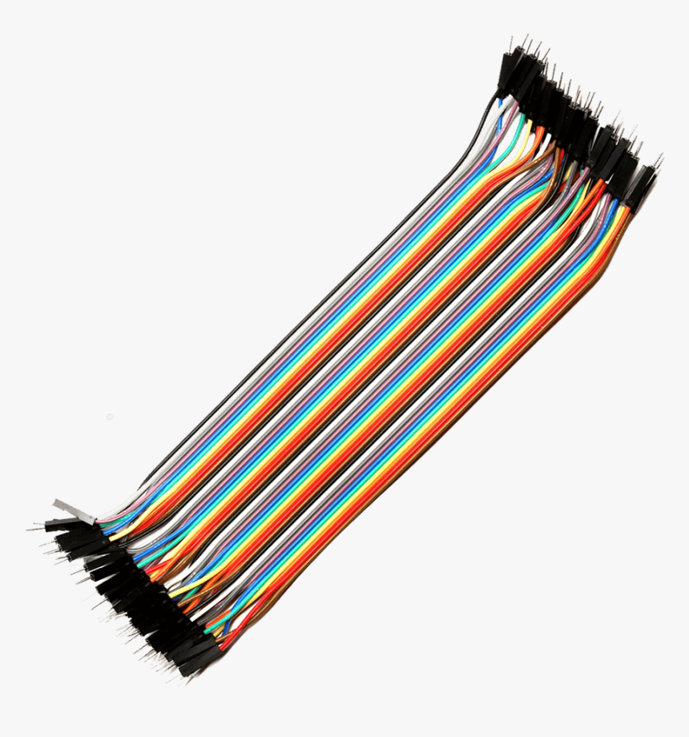
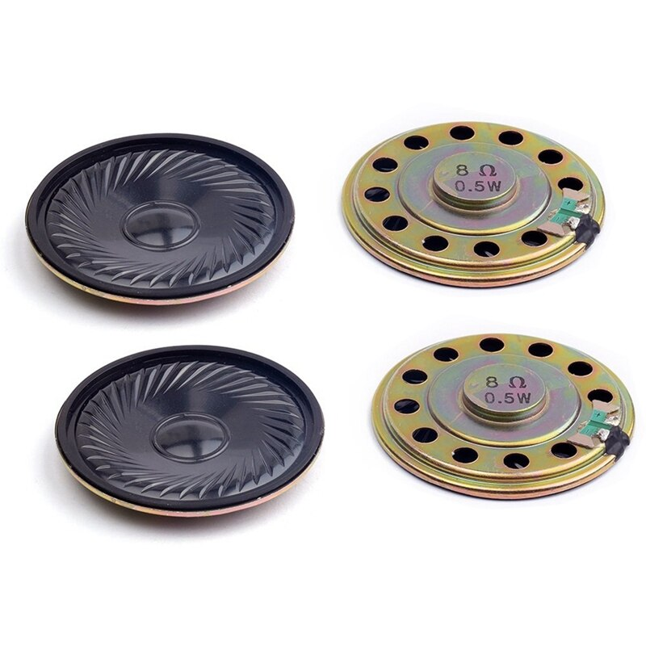

DESARROLLO
¿Cómo llegamos a Guitar Hand?
Trasladar un instrumento muchas veces puede ser un poco tedioso, ya que son grandes, algunas veces pesados y siempre existe el temor a que se dañe o le pase algo mientras lo trasportamos. Además puede ser algo complejo o que te tome más tiempo aprender a tocar un instrumento y hacer música. Así nace Guitar Hand, una invención hecha por amantes de la guitarra y la magia de esta.
¿Cómo funciona Guitar Hand?
El proyecto consiste en la reproducción de notas musicales por medio de una bocina, la cual estará alimentado por un amplificador de sonido y este último conectado al arduino. Se usará un módulo con tarjeta SD donde se almacenará la información de las notas musicales (do-re-mi-fa-sol-la-si). Las entradas digitales que ingresan al procesador, son indicadas por leds de diferentes colores y se activan ya sea al apretar un pulsador o al interrumpir el paso de la luz infrarroja de los leds emisor/receptor con la mano.
Elementos Claves
Arduino Uno
Placa de microcontrolador (procesador) donde se programa el código y está equipada por pines de entrada y salida: digitales y analógicas.
Características
-Microcontrolador: ATMega328P.
-Velocidad de reloj: 16 MHz.
-Voltaje de trabajo: 5V.
-Voltaje de entrada: 7,5 a 12 voltios.
-Pinout: 14 pines digitales (6 PWM) y 6 pines
-1 puerto serie por hardware.
-Memoria: 32 KB Flash (0,5 para bootloader), 2KB RAM y 1KB Eeprom

Cable USB para Arduino Uno
Cable USB para Arduino tipo A/B. Incluye conector macho tipo “A” en un extremo y tipo “B” en el otro. Este cable te permitirá conectar tu tarjeta de desarrollo a la computadora para descargar programas y/o realizar la comunicación serial.
Características:
-Conectores tipo A y B que cumplen con el estándar USB.
-Excelente conductividad eléctrica.
-Aproximadamente 20 cm de largo.
-Ideal para utilizar en en computadoras portátiles debido a su longitud.
-Elaborado en plástico color azul translucido.
-Compatible con cualquier otro periférico o dispositivo USB que tenga los mismos conectores.
-Peso: 0.018 kg.
-Dimensiones: 31×1.5×1 cm.

Protoboard
Es un tablero compuesto por orificios que se encuentran conectados eléctricamente entre sí de manera interna. En ella se pueden insertar elementos electrónicos y cables para el armado y prototipado de circuitos electrónicos.
Características
-Puntos de contacto: 830.
-Contactos de bronce fosforoso y níquel plata.
-Cable soportado: 29-20AWG (Ø 0.3 a 0.8 mm aprox.)
-Espaciamiento estándar entre pines de 0.1"(2.54mm)
-Vida útil de más 10.000 inserciones.
-Soporte en plástico ABS.
Resistencia de 220 Ohmios
Componente eléctrico diseñado para limitar o regular el flujo de corriente en un circuito electrónico. Para este proyecto, limita la corriente que reciben los diodos leds, evitando que se quemen.
Características
-Resistencia: 220Ω
-Potencia Max: 1/4W
-Tolerancia : 5%
-Material: Carbón
-Tipo de montaje: Through hole
-Medidas: 6.3mmX0.25mm

Jumpers de conexión
Cables que permiten la conexión de los dispositivos.
Características
-20 centímetros de longitud.
-40 cables por unidad.
-Organizados en 4 grupos de 10 colores.
-Conector Dupont Macho-Macho.
-Espaciado estándar entre conexiones (2.54mm).
Bocina de Sonido 0.5 Watts 8 ohmios
Dispositivo que genera las notas musicales de la guitarra.
Características
-Potencia: 0,5 Watts
-Resistencia: 8 ohmios
-Diámetro: 40mm
-Espesor: 5mm
-Frecuencia: 45kHz
Sensor infrarrojos (emisor y receptor)
Led IR 3mm es un par de led infrarrojos que consta de un fotodiodo (Emisor) que emite una luz infrarroja al ser polarizado mediante sus rangos de voltaje de trabajo y un fototransistor (Receptor) que permite captar la luz infrarroja emitida por el fotodiodo.
Características
Emisor:
-Voltaje de operación: 1,7V.
-Corriente máxima: 100mA
-Longitud de onda: 940nm
Receptor:
Voltaje máximo inverso: 1,3V.
Ángulo de visión: 20°
Longitud de onda: 940nm.

Led de colores
Dispositivo que permite el paso de corriente en una sola dirección y que al ser polarizado emite haz de luz. En este proyecto, lo utillizamos como indicador cuando una nota musical se activa
Características
-Trabaja como un diodo normal pero al recibir corriente eléctrica emite luz.
-Los LED trabajan aproximadamente con corriente de 2V.
-Para conectarlos a un voltaje distinto, se debe usar una resistencia.
-Se conecta la corriente al semiconductor superior del diodo LED lo cual permitirá el paso de corriente eléctrica y hará que el semiconductor emita luz.
-No poseen elementos tóxicos y alcanzan su máximo rendimiento apenas son encendidos.

Pulsadores Switch
Interruptor o switch que permite el paso de la corriente eléctrica de manera momentánea. Es un dispositivo simple con dos posiciones, ON y OFF. Estos pequeños pulsadores son de un 1/4 por cada lado, tienen 4 pastillas por lo que se puede pensar que hay 4 cables, pero son dos de cada lado unidos, por tanto, este pulsador es solamente de 2 cables.
Características
-Utilizado como switch o interruptor al momento de ser presionado.
-Funciona como contacto normalmente abierto (NA).
-Infinito número de aplicaciones.
-Aguanta hasta 50 A.
-Voltaje: 120 VDC/ 220 VAC.
-Tamaño muy reducido.
-4 pines amigables para usar en el protoboard.

Módulo para tarjeta SD LVC125A
Lector de Memorias Micro SD compatible con Arduino, es capaz de realizar la lectura de información contenida en una tarjeta micro SD a través del chip LVC125A.
Características
-Voltaje de Trabajo: 3.3V
-Velocidad de muestreo = 16000hz
-Profundidad de bits=8bits
-Canales=mono

Amplificador de sonido TDA7073A
Circuito integrado que le brinda a la bocina una mayor corriente y tensión que la que puede darle el arduino conectado directamente.
Características
-Sin componentes externos.
-Velocidad de respuesta muy alta.
-Fuente de alimentación única.
-A prueba de cortocircuitos.
-Corriente de salida alta (0,6 A).
-Amplio rango de voltaje de suministro.
-Voltaje de compensación de salida bajo.
-Adecuado para manejar señales PWM de hasta 176 kHz.
-Protegido contra ESD en todos patas.